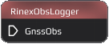
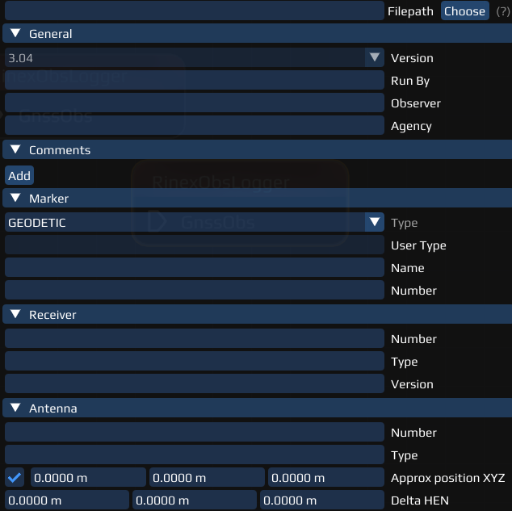
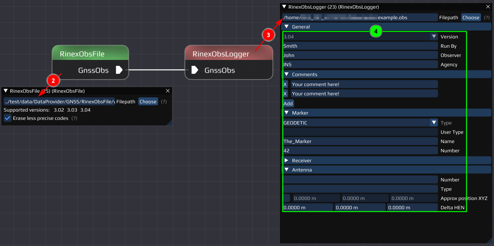

|
0.2.0
|
|
0.2.0
|

The RinexObsLogger Node saves incoming observation data to a obs-file according to RINEX standards.

The Settings offer to enter a file path or choose one to save the csv-file generated.
Further, adjustment and changes to the generated obs-file can be made, but are not necessary. The changes only account for entries in the generated file that are neither automatically filled by the input (e.g. the observations) or INSTINCT (e.g. the program and its version).
If you don't know how to reproduce any of the explained steps, read the Getting Started first.
Required Nodes:
- RinexObsFile Node (RinexObsFile Node)
- RinexObsLogger Node
Required Data
../test/data/DataProvider/GNSS/RinexObsFile/v3_04/INS_1581.19ORelative path, file included in INSTINCT
Steps
- Add both Nodes to your workspace and connect them.
- Open the RinexObsFile Node Settings:
- Choose or copy the relative path of the INS_1581.19O file
- Open the RinexObsLogger Node Settings:
- Choose a path and a file name to save your resulting obs-file.
- Try around with any input, e.g. your name, agency, add comments etc.
- Run the code, open your generated file and/or compare it with the input file.
Example of how the result should look like:

Last updated: 2024-03-18